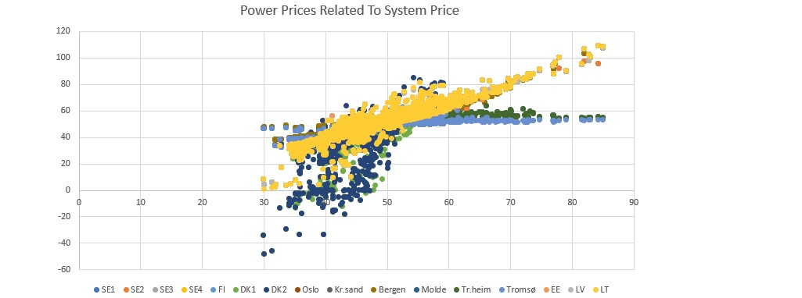

Power prices in January, February and March 2019
Excel Pivot analysis of data from the Nordic power market from January to March, with a specific look at how the prices wary based on which hour of the day it is.
Hours of power price
In the following two tables we have taken a look at how power prices vary based on what hour of the day it is. The average power price from each hour of every day from January the 1st to March the 30th have been collected and analysed with Excel Pivot. We take a look at the System price, and the el spot area price of Oslo, DK1, SE1 and FI.
Hours of highest power price
Hours
System [EUR/MWh]
Oslo [EUR/MWh]
DK1 [EUR/MWh]
SE1 [EUR/MWh]
FI [EUR/MWh]
08-09
50.19
52.17
49.55
50.26
53.51
18-19
50.11
51.36
51.48
50.19
54.25
17-18
49.97
51.50
50.33
50.06
54.03
09-10
49.89
51.64
48.21
50.02
52.95
10-11
49.46
51.04
46.50
49.53
52.41
Hours of lowest power price
Hours
System [EUR/MWh]
Oslo [EUR/MWh]
DK1 [EUR/MWh]
SE1 [EUR/MWh]
FI [EUR/MWh]
03-04
43.17
44.86
32.54
40.38
40.38
02-03
43.29
44.96
32.38
40.34
40.34
04-05
43.58
44.92
33.51
41.98
41.98
01-02
43.66
45.16
33.47
40.82
40.82
00-01
44.46
45.65
35.29
42.20
42.20
The findings from the two tables that have been presented shows nothing out of the ordinary. The price is at its lowest during the night and at its highest during the morning hours and afternoon when the consumption naturally is at its highest.
Hours with lowest and highest power price
Next up we will take a look at what the maximum price was and in which hour from the last three months.
Maximum hour price
Hours
System [EUR/MWh]
Oslo [EUR/MWh]
DK1 [EUR/MWh]
SE1 [EUR/MWh]
FI [EUR/MWh]
09-10
84.97
107.67
107.67
107.67
107.67
08-09
84.21
109.45
109.45
95.83
109.45
11-12
82.90
100.37
100.37
100.37
100.37
Minimum hour price
Hours
System [EUR/MWh]
Oslo [EUR/MWh]
DK1 [EUR/MWh]
SE1 [EUR/MWh]
FI [EUR/MWh]
03-04
29.90
37.54
-33.60
4.32
4.32
02-03
29.97
37.61
-48.29
4.07
4.07
01-02
31.24
37.70
-45.92
2.90
2.90
There is no secret that the power prices in Denmark are the most fluctuating with their depedancy of the wind due to their wind power. This results in hours or even days with negative power prices. Hydro power in southern Norway could take an advantage of this by pumping water onto their reservoirs, in essence getting paid doing so.
The graph above shows the power price from all el spot areas compared to the system price. This visualizes how in particular the power price in Denmark often does not correlate with the system price.
Sources and credits
Source for this article is data from Nordpool